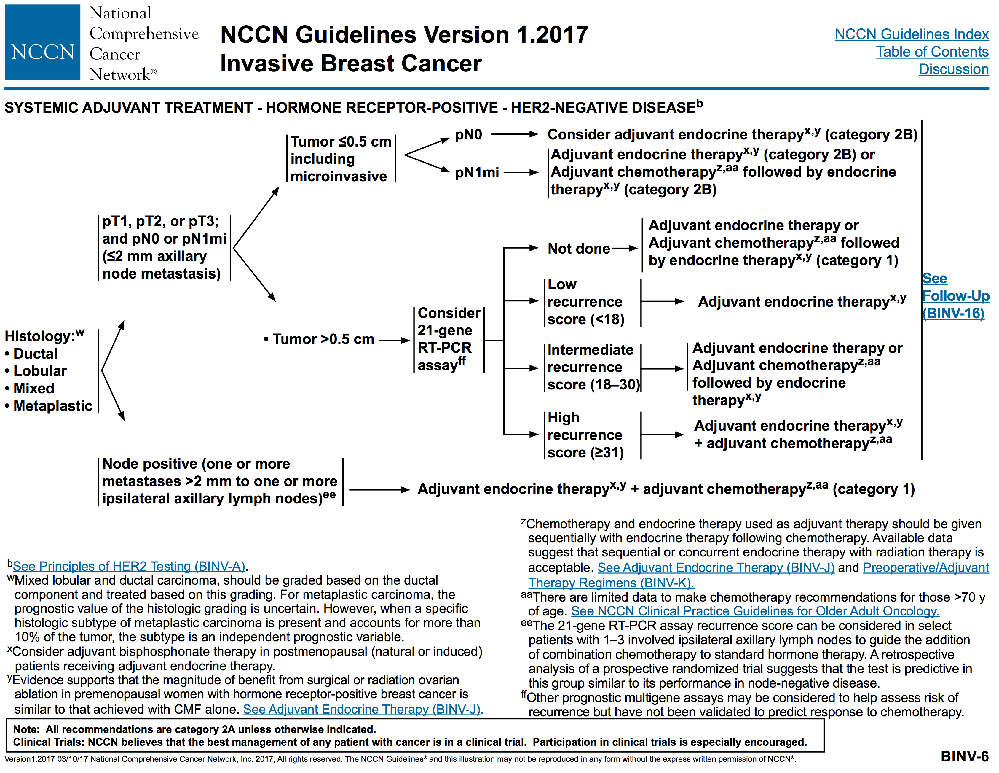
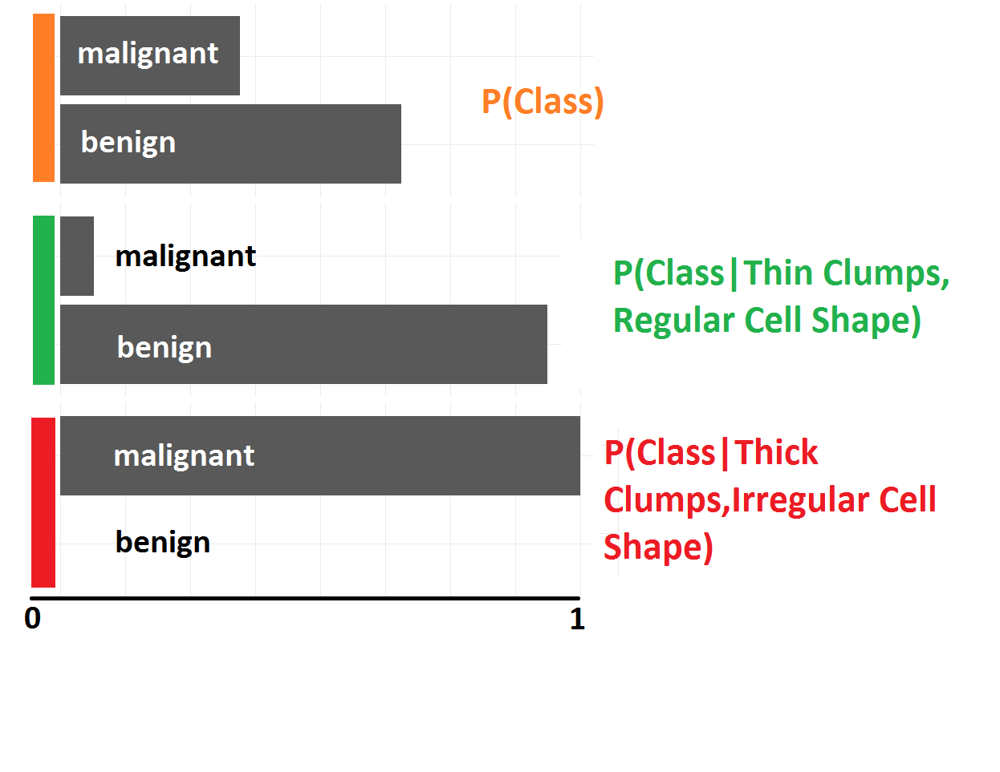
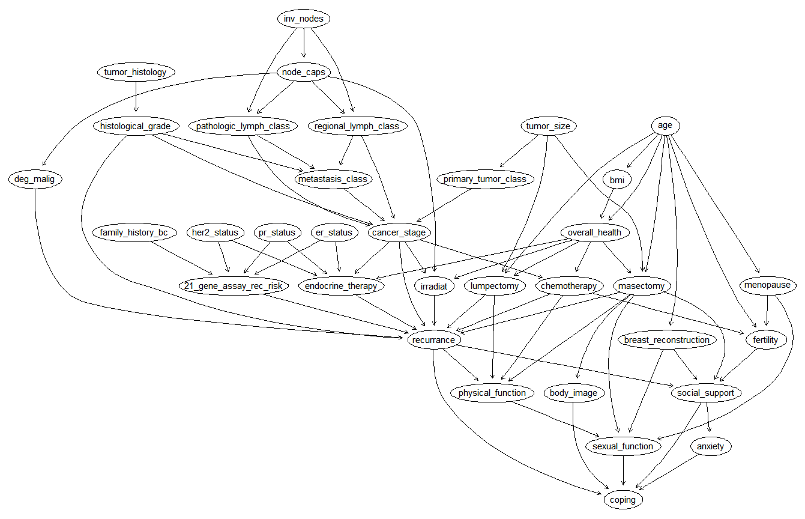

Breast Cancer Risks, Treatment & Outcome Modeling
Description Logic & Bayesian Networks
Piotr Mankowski & Pascal Brandt
Use the aside tag for speaker notes.
Rationale
• Most common cancer around the world
Breast Cancer Overview
Cause üíÄ
Treatment üíä
Surgery
Chemo
Endocrine
Radiation
• Cancer is caused by an accumulation of mutations in the cells that cause them to
Decision Tree
• Shows the decision following a lumpectomy
Decision Tree
• Here we see paths taken dependent on hormone response
Decision Tree

• Here we see branching based on:
Description Logic
Competancy Questions
Surgery Type
Postop Therapy
• We wanted to ask these basic questions of our KR:
Simplified Surgery Factors
• For surgery, we consider two ways of making the decision
Multiple Surgery Recommendations
Lumpectomy
hasPreopTherapyResponse some
(CompletePreopResponse or PartialPreopReponse)
hasStage some
(Stage0 or StageIA or StageIB or StageIIA or StageIIB)
hasPreopTherapyResponse some
(ConfirmedProgressivePreopResponse or PartialPreopReponse)
hasStage some
(StageIIA or StageIIB or StageIIIB or StageIIIC or StageIV)
• Ran into first limitation of DLs
Simplified Postop Factors
• Seven simplified factors in our postop decision tree
Treatments
Chemotherapy
ChemotherapyFollowedByEndocrineTherapy
StandaloneChemotherapy
EndocrineTherapy
EndocrineTherapyFollowedByChemotherapy
NoAdjuvantTherapy
RadiationTherapy
APBIRadiationTherapy
RegionalRadiationTherapy
WholeBreastRadiationTherapy
- Ran into another limitation with temportal dimension
Bayesian Networks
Model the world using graph theory and probability theory
Represented by D irected A cyclic G raphs (DAGs )
Nodes "explained" by neighbors
Efficient algorithms for learning and inference
• Bayesian Networks attempt to model some aspect of the world using graph theory and probability theory
Breast Cancer Data
• We looked for publicly-available breast cancer datasets
Step #1: Learn The Structure
• Used bnlearn package in R (and related packages) for most BN work
BCSC Risk Dataset
Wisconsin Prognostic Dataset
Wisconsin Diagnostic Dataset
*Wisonsin Original Dataset*
*Ljubljana Recurrance Dataset*
Step #2: Estimate Conditional Probabilites
• Using the structures and the datasets, we estimated the conditional probabilites
Step #3: Ask Questions!
• With the BNs built, we can:
Q: How does outcome change based on tumor cell clump thickness and shape irregularity?

Monolayers (normal) vs. multilayerd (malignant)
Chance of malignance and benigness
Q: How does level of tumor cell shape depend on outcome and cell size uniformity?
Some more questions...
Some more questions using different inference method, I wouldn't dive into it.
Step #4: Create Full-size Network

1. Identified all the variables we wanted to model
(NCCN, previous graphs, and DL approach)
2. Manually added arcs based on commmon sense
3. Created "random" dataset, used methods in part 2 to estimate prob. dist.
Random data results in poor edge strength =(
Random data approach was not ideal...
- should have created prob. dist directly
OR
- gotten acess do real dataset/datasets to use for estimation
Q: How does the probability of Radiation Therapy change for high stage, poor health individuals based on Lymph Node Capsule invasion?
Discussion
Exact vs Probabilistic
Data vs Knowledge
Adaptable
Temporal
• Make
• These
• Points
Conclusion
Bayesian Networks ü§òüèº
>
Description Logic üôÖ
• Much more widely used
• Probably because models without uncertaintly are overly simplistic
• Points